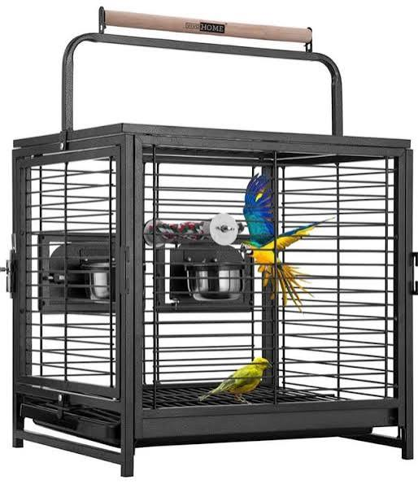

Caring for floofballs requires a little bit of effort,
not an outstanding degree of it.
I'll list some important factors here without going into too much
depth, and then point you to some resources for further investigation.
Cages
Don't even think about buying one of those small,
metal cages you see at the store.
Even for one pig, that is not enough space.
Putting a pig in a cage like that would be like putting
you in a janitor's closet for the rest of your life.
Pigs need space to run around so they can live happy lives.
BAD cage:
Good cages have a lot of space and hiding places
for guinea pigs to run to if they feel threatened.
These cages can come in many different forms.
Here's an example of a great cage:

Here's a video on how to build a C&C cage:
Diet
What a guinea pig eats is very important!
Guinea pig diets should consist of water, timothy hay,
timothy-hay based pellets, fresh fruits, and fresh vegetables.
Good quality hay should be their staple food.
Pellets come second to that, and fruits and vegetables
should be served in moderation.
A video on good diet practices:
A video about preserved treats and snacks:
Social Environment
Furball Friends for Your Furball
Guinea pigs are social animals.
They should have guinea pig friends to live and play with.
Look at these guinea pigs hanging out:
Non-furball Friends for Your Furball
You can also be a friend to your guinea pig.
Respect it as a living creature and give it time
to become comfortable around you.
More on taming guinea pigs:
Playtime
Guinea pigs should have time outside their cage to
explore and exercise.
Make sure the environment is safe and protected from
predators.